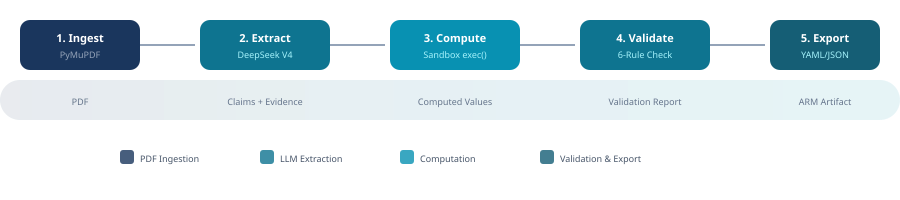
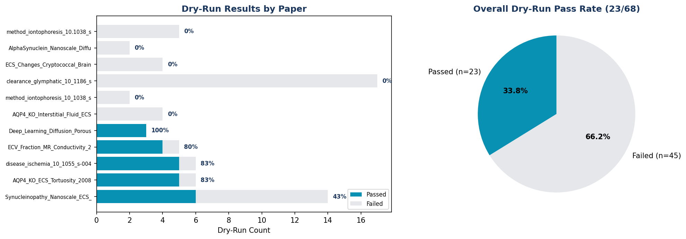

5-Stage Pipeline: Ingest → Extract → Compute → Validate → Export
脑细胞外间隙（ECS）是神经科学核心研究领域，每年数百篇论文发表。但当前研究面临三大挑战：

| 特性 | 实现 | 意义 |
|---|---|---|
| Provenance 追溯 | 每条 Claim 记录 SourceLocation（页码、章节、原文引用） | 可精确定位到 PDF 原文 |
| ExtractionMethod 分类 | exact_quote / llm_inferred / review_required | 区分复制 vs 推断 vs 需复核 |
| Dry-Run 计算验证 | 安全沙箱 exec() 执行论文公式，5% 容差 | 独立验证论文定量数据 |
| Hallucination 检测 | 子串匹配 + 模糊 Token 重叠（阈值 0.6） | 自动检测 LLM 幻觉 |
| Web UI | Streamlit 中/英双语界面 + 论文搜索下载 | 低门槛交互 |
本项目的代码实现在 AI 辅助下完成，但所有关键设计决策均由人工主导——需求定义、架构选择、执行规则的制定均来自讨论与把关。以下是核心决策节点。
| 决策节点 | 没有这个决策会怎样 | 实际影响 |
|---|---|---|
| 执行规则写入 CLAUDE.md | AI 反复擅自修改需求 | 后续所有改动严格对齐用户要求 |
| 拒绝缩减功能范围 | 缺少 Streamlit UI 或 Dry-Run | 完整的 CLI + Web + 验证体系 |
| Prompt ASCII 化 + 公式约束 | Dry-run 全部 insufficient_data | 0 → 23 通过，核心演示成立 |
| 年份拓宽 + HAS_PDF 过滤 | 只能找到近 3 年定性论文 | 找到经典定量论文（AQP4-KO 等） |
| 语言切换 bug 修复 | UI 体验差 | 中/英双语稳定切换 |
| 阶段 | 工具 | 输入 | 输出 | 关键技术点 |
|---|---|---|---|---|
| 1. Ingest | PyMuPDF | PDF 文件 | ParsedPaper(页文本 + 元数据) |
逐页提取文本块、自动识别文本/图片/表格类型、限 50 页 |
| 2. Extract | DeepSeek V4 (deepseek-chat) |
ParsedPaper |
ExtractionResult(Claims, Evidence, NumericalStatements, Protocol, Limitations) |
两轮提取策略（摘要→追加章节）、temperature=0、逐条 try/except 容错、Markdown fence 剥离 |
| 3. Compute | Sandbox exec() | NumericalStatement |
DryRunResult(status, computed, deviation) |
白名单沙箱（math only）、5s 超时、5% 容差、ASCII 参数名、公式转译 |
| 4. Validate | 6-Rule Engine | ARM |
ValidationReport |
R1 Schema、R2 数量(≥5)、R3 Claim-Evidence 关联、R4 Hallucination 检测（子串+模糊）、R5 Provenance 评分、R6 Inference 标记 |
| 5. Export | PyYAML / JSON | 完整 ARM + Validation + Dry-Run 结果 |
arm.yaml + arm.json + validation.json + run.log |
Pydantic 序列化、YAML 可读性、Run Log 文本摘要 |
所有阶段通过类型化对象通信，确保类型安全：
论文：Aquaporin-4-deficient mice have increased extracellular space without tortuosity change (J Neurosci, 2008)
| 验证项 | 公式 | 参数 | 计算值 | 报告值 | 偏差 | 结果 |
|---|---|---|---|---|---|---|
| α %变化 | (alpha_KO - alpha_WT) / alpha_WT * 100 |
αKO=0.23 αWT=0.18 |
27.78% | 28.0% | 0.79% | PASS |
| α 差值 | alpha_KO - alpha_WT |
同上 | 0.050 | 0.050 | 0.00% | PASS |
| λ 差值 | lambda_KO - lambda_WT |
λKO=1.62 λWT=1.61 |
0.010 | 0.010 | 0.00% | PASS |
| k' 差值 | k_prime_KO - k_prime_WT |
k'KO=0.0045 k'WT=0.0031 |
0.0014 | 0.0014 | 0.00% | PASS |
| α 比值 | alpha_KO / alpha_WT |
同上 | 1.278 | 1.280 | 0.17% | PASS |
| 脑片 α% | (alpha_slice_KO - alpha_slice_WT) / alpha_slice_WT * 100 |
参数不足 | — | — | — | INSUFFICIENT |
| 改进前 | 改进后 | |
|---|---|---|
| Dry-Run 总数 | 4 | 6 |
| 通过数 | 0 | 5 |
| 通过率 | 0% | 83% |
| 参数名 | α_AQP4_KO | alpha_KO |
| 公式 | "α = ECS volume fraction" (描述性文本) | "(alpha_KO - alpha_WT) / alpha_WT * 100" (数学表达式) |

| 论文 | 年份 | Claims | Dry-Runs | 通过 | 通过率 |
|---|---|---|---|---|---|
| Synucleinopathy Nanoscale ECS | 2020 | 6 | 14 | 6 | 43% |
| AQP4-KO ECS Tortuosity ★ | 2008 | 6 | 6 | 5 | 83% |
| Rhabdomyolysis Review | 2024 | 7 | 6 | 5 | 83% |
| ECV Fraction MR Conductivity | 2023 | 6 | 5 | 4 | 80% |
| Deep Learning Porous Media | 2023 | 8 | 3 | 3 | 100% |
| AQP4-KO Interstitial Fluid | 2018 | 6 | 4 | 0 | 0% |
| Cryptococcal Brain Granuloma | 2022 | 5 | 4 | 0 | 0% |
| TASTPM Alzheimer's Model | 2024 | 7 | 2 | 0 | 0% |
| α-Synuclein Nanoscale Diffusion | 2024 | 5 | 2 | 0 | 0% |
| ECM & PNNs Modulate ECS | 2024 | 7 | 2 | 0 | 0% |
| Glymphatic apoE Distribution | 2016 | 5 | 17 | 0 | 0% |
拖拽 PDF 或点击上传
📊 Claims (6)
C-001 exact_quote C-003 review_required C-004 exact_quote🧮 Dry-Runs (6)
✅ N-001: passed (α% change, dev=0.79%)| 功能 | 说明 | 技术实现 |
|---|---|---|
| 📄 论文分析 | 上传 PDF → 自动运行 5 阶段 Pipeline | Streamlit file_uploader + Orchestrator |
| 🔍 论文搜索 | 5 类 ECS 查询、可配置年份、自动下载 | Europe PMC REST API + 出版商 PDF 直链 |
| 🌐 中/英切换 | 150+ 翻译条目、session state 管理 | t() 函数 + st.radio key="lang" |
| 📊 结果可视化 | Pipeline 指示器、Dry-Run 面板、Claim 标签 | 自定义 CSS + Metric 卡片 |
| 📦 结果导出 | ARM YAML + JSON + Validation Report + Run Log | PyYAML + Pydantic model_dump() |
| 层级 | 技术 |
|---|---|
| UI | Streamlit + 自定义 CSS |
| LLM | DeepSeek V4 (deepseek-chat) |
| PyMuPDF (fitz) | |
| 搜索 | Europe PMC REST API |
| 层级 | 技术 |
|---|---|
| Schema | Pydantic v2 |
| 验证 | 安全沙箱 exec() |
| 测试 | pytest (15 tests) |
| 导出 | YAML + JSON |
| 局限 | 影响 |
|---|---|
| LLM 依赖 DeepSeek API | 离线不可用、token 成本 |
| PDF 获取受限 | PMC ?pdf=render 404、出版商 403 |
| 公式转译覆盖有限 | 仅支持约 5 种预定义模式 + 参数推导 |
| 无多轮迭代验证 | dry-run 失败无法自动修正 |
| 无表格/图片数据提取 | 仅文本提取，漏掉图表中的数据 |